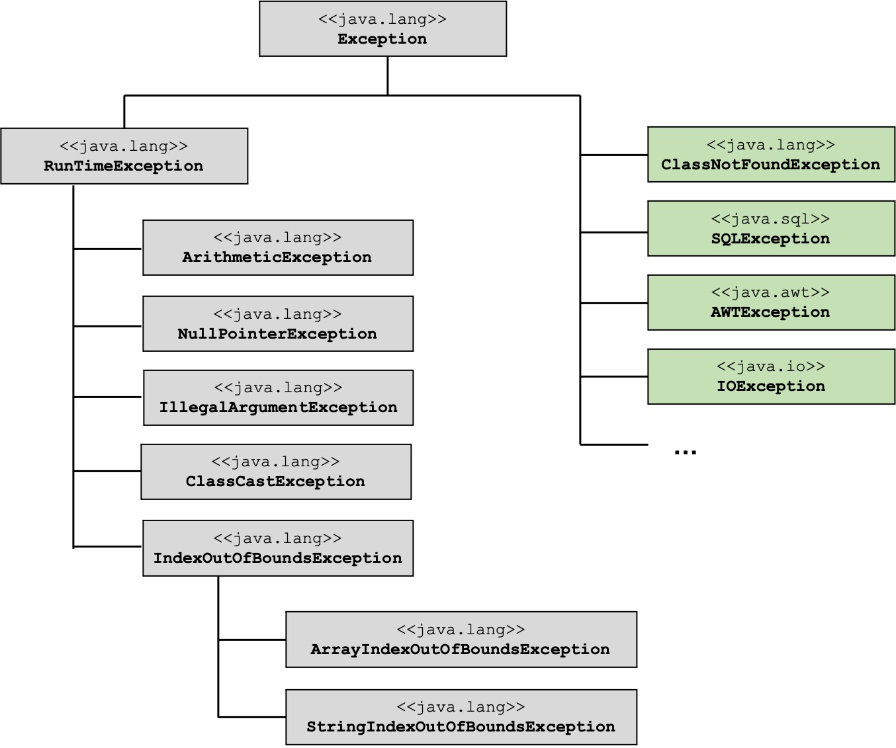

Exceptions¶
Motivation
Wir wissen nun, wie wir einen String in ein int umwandeln. Nämlich mithilfe der parseInt(String)-Methode der Klasse Integer. Was aber passiert, wenn der String gar keiner Zahl entspricht? Dann wird eine Exception geworfen und das Programm sofort beendet. Wir können aber gar nichts dafür, dass die Nutzerin keine Zahl eingegeben hat. Unser Programm ist eigentlich korrekt. Wie können wir den Programmabsturz verhindern? Wie können wir die Nutzerin solange bitten, eine Zahl einzugeben, bis sie wirklich eine Zahl eingibt?
Exceptions kennen wir schon, denn sie passieren uns häufiger. Wenn wir z.B. auf einen Index in einem Array zugreifen, dieser Index aber gar nicht existiert, wird eine ArrayIndexOutOfBounds-Exception geworfen. Wenn wir auf eine Objekteigenschaft zugreifen wollen, z.B. eine Objektmethode, die dafür verwendete Referenzvariable aber gar nicht auf ein Objekt zeigt, sondern auf null, erhalten wir eine NullPointerException. Wenn bei einer Nutzereingabe eine Zahl erwartet wird, um damit weiterrechnen zu können, die Nutzerin gibt aber etwas anderes als eine Zahl ein, dann wird ebenfalls eine Exception geworfen.
Wir wollen aber gar nicht, dass das Programm in solchen Fällen abstürzt, sondern wir wollen diesen „Fehler“ erkennen und darauf reagieren. Grundsätzlich gibt es also zwei Arten von Fehlern:
- syntaktische Fehler → können vom Compiler vor der Laufzeit erkannt werden; das Programm wird gar nicht erst vollständig compiliert und nicht ausgeführt und
- logische Fehler → können erst zur Laufzeit erkannt werden.
Im Falle der logischen Fehler, die erst zur Laufzeit auftreten, spricht man von Laufzeitfehlern (oder Ausnahmen oder Exceptions). Die Aufgabe beim Programmieren ist nun, zu identifizieren, an welchen Stellen ein logischer Fehler auftreten könnte, z.B.
- fehlerhafte Benutzereingabe
- Datenbank- oder Netzwerkverbindung nicht verfügbar
- gesuchte Datei/Ordner nicht vorhanden usw.
Die Stellen, an denen ein solcher logischer Fehler auftreten könnte, nennen wir im Folgenden kritischer Abschnitt. Wir müssen solche kritischen Abschnitte in unserem Quellcode identifizieren und haben dann die Möglichkeit, solche kritischen Abschnitte so zu implementieren, dass die Exception, die eventuell geworfen wird, abgefangen wird und das Programm dadurch nicht abstürzt.
try-catch¶
Die grundsätzliche Idee ist die, dass wir zunächst versuchen den kritischen Abschnitt einfach auszuführen. Wir versuchen z.B. einfach mit einem index auf das Array zuzugreifen, auch wenn wir gar nicht wissen, ob dies ein tatsächlicher index aus dem Array ist. Allerdings binden wir diesen Versuch in einen try{}-Block ein.
Sollte in einem solchen try{}-Block nun eine Exception geworfen werden, dann fangen wir diese in einem catch(){}-Block auf und behandeln sie dort. Die allgemeine Syntax dafür sieht so aus:
Es passiert Folgendes: wir führen die Anweisung(en) in Zeile 3 aus. Wenn diese keine Exception wirft, also alles okay ist, dann machen wir einfach hinter dem catch-Block, also nach Zeile 8 weiter. Wenn aber die Anweisung(en) in Zeile 3 einen Laufzeitfehler verursachen, also eine Exception werfen, dann wird diese in Zeile 5 "aufgefangen" und in dem Anweisungsblock in den Zeilen 6-8 behandelt. Das Programm stürzt nun nicht mehr ab, sondern wir haben die Möglichkeit, auf die Exception zu reagieren.
Beispiel ohne try-catch¶
Wir verdeutlichen dieses Prinzip an einem ersten Beispiel:
Das Beispiel enthält zwei Methoden charAt() und divide. Der charAt-Methode wird ein String übergeben und ein index. Die Methode gibt das Zeichen (char) zurück, dass im String unter dem index gespeichert ist (z.B. charAt("Hallo", 1) gibt das 'a' zurück). Es wird jedoch gar nicht geprüft, ob index tatsächlich ein korrekter Index des Strings s ist, d.h. evtl. ist index kleiner als 0 oder größer als die Länge von s minus 1. Die Anweisung s.charAt(index); ist somit eine kritische Anweisung, denn sie kann (bei "falschem" index) eine StringIndexOutOfBoundsException werfen.
Genau so ist die Anweisung divident/divisor; in der Methode divide eine kritische Anweisung, da es sein kann, dass der divisior gleich 0 ist. Bei der int-Division durch 0 wird eine ArithmeticException geworfen.
Wenn die main-Methode nun wie angegeben ausgeführt wird, dann "stürzt" das Programm bereits bei Ausführung von Zeile 16 ab und Zeile 17 wird gar nicht mehr erreicht:
Exception in thread "main" java.lang.ArithmeticException: / by zero
at packageName.Ausnahmen.divide(Ausnahmen.java:10)
at packageName.Ausnahmen.main(Ausnahmen.java:16)
Die Fehlermeldung gibt uns an, welche Zeile die Ausnahme geworfen hat, nämlich Ausnahmen.java:10 und um welche Exception es sich handelt, nämlich ArithmeticException: / by zero.
Wenn wir in der main-Methode Zeile 16 auskommentieren, dann sehen wir, dass auch die Anweisung in Zeile 17 eine Exception wirft, nämlich:
Exception in thread "main" java.lang.StringIndexOutOfBoundsException: String index out of range: 5
at java.base/java.lang.StringLatin1.charAt(StringLatin1.java:47)
at java.base/java.lang.String.charAt(String.java:702)
at packageName.Ausnahmen.charAt(Ausnahmen.java:5)
at packageName.Ausnahmen.main(Ausnahmen.java:17)
Die Fehlermeldung gibt uns an, welche Zeile unseres Programms die Ausnahme geworfen hat, nämlich Ausnahmen.java:5 und um welche Exception es sich handelt, nämlich StringIndexOutOfBoundsException: String index out of range: 5. Sie sehen auch, dass eigentlich sogar die Anweisung in Zeile 47 in der Klasse StringLatin1 in der dortigen Methode charAt die Exception geworfen hat. Wir werden dieses "Weiterreichen" von Exceptions gleich noch näher betrachten.
Beispiel mit try-catch¶
Zunächst "reparieren" wir unseren Code, indem wir try-catch-Blöcke um unsere kritischen Anweisungen hinzufügen:
Die kritischen Anweisungen wurden nun jeweils in einen try-Block integriert und die Behandlung der eventuell auftretenden Exceptions besteht nur aus einer jeweiligen Fehlerausgabe (ich habe hier dafür nicht das Standardausgabegerät out in den println-Anweisungen verwendet, sondern err - Zeilen 12 und 26).
Wenn wir das Programm nun ausführen (in main muss auch nichts mehr auskommentiert werden), dann erhalten wir die Ausgabe:
Das Programm "stürzt" nun also nicht mehr ab, das ist schonmal ein Erfolg. So ganz optimal ist die Lösung allerdings noch nicht, da wir nun jeweils einen Nebeneffekt in unsere Methoden eingebaut haben. Angenommen, in der divide-Methode wird eine Exception geworfen, dann erfolgt durch Zeile 26 die Fehlerausgabe auf die Konsole. Danach wird in Zeile 28 aber result zurückgegeben (hat den Wert 0.0, den wir bei der Initailisierung in Zeile 19 angegeben haben) und dieser Wert wird durch Zeile 33 auf die Konsole ausgegeben. Das gleiche gilt für die charAt-Methode. Auch da haben wir einen Nebeneffekt eingebaut und es wird durch Zeile 34 das Leerzeichen auf die Konsole ausgegeben. Nebeneffekte wollen wir aber unbedingt vermeiden und müssen unsere Implementierung deshalb noch ändern.
Zunächst schauen wir uns aber den generellen Ablauf einer solchen Ausnahmesituation an:
Ablauf einer Ausnahmesituation¶
Der generelle Ablauf beim "Werfen" eine Exception ist wie folgt:
- Das Laufzeitsystem (JVM) erzeugt ein Ausnahme-Objekt (Objekt vom Elterntyp
Exception), wenn eine Exception "geworfen" wird - Die Abarbeitung des Programmcodes wird sofort unterbrochen.
- Das Laufzeitsystem sucht nach der nächsten
catch-Klausel und führt diese aus. - Passt die gefundene
catch-Klausel nicht zur Art der Ausnahme, wird die nächstecatch-Klausel gesucht usw.
Betrachten wir nochmal obigen Code, dann stellen wir fest, dass in der einen catch-Klausel (Zeile 10) ein Objekt vom Typ StringIndexOutOfBoundsException erwartet wird. Wir werden gleich sehen, dass dies schon ein sehr spezieller Typ in der Vererbungshierarchie von Exception ist. Das Programm würde auch genau so funktionieren, wenn wir dort anstelle von StringIndexOutOfBoundsException allegmein eine Exception erwarten würden. Das gleiche gilt für die andere catch-Klausel (Zeile 24), wo wir eine ArithmeticException erwarten. Wir schauen uns die Vererbungshierarchie der Exceptions gleich an. Generell gilt, dass man mehrere catch-Blöcke hintereinander setzen kann und der erste catch-Block, der dem erwarteten Parametertyp entspricht, wird ausgeführt.
Wichtig ist, dass wir uns merken, dass durch eine Exception der Programmablauf sofort unterbrochen und zur nächsten "passenden" catch-Klausel gesprungen wird.
Ein weiteres Beispiel¶
Wir schauen uns dazu ein weiteres Beispiel an und ergänzen unsere Klasse Ausnahmen um eine weitere Methode inputInt():
Schauen wir uns die Implementierung von inputInt() genauer an:
- in Zeile
50wird ein kleines Eingabefenster erzeugt (JOptionPaneist eine Klasse aus demjavax.swing-Paket, welches wiederum im Moduljava.desktopverfügbar ist). Die Eingabe in dieses Fenster wird alsStringzurückgegeben und in der Variableninputgespeichert. - in Zeile
53wird versucht, den Eingabestringinputin einintumzuwandeln. Dazu wird die MethodeparseInt()verwendet, die zur KlasseIntegergehört (Integerist eine sogenannte Wrapper-Klasse - diese schauen wir uns nächste Woche an). - wenn
inputeine Zahl enthält, also z.B. so aussieht:"1234", dann erzeugtparseInt()daraus dieint-Zahl1234und alles ist ok. Wenninputjedoch keine Zahl enthält, also z.B."hallo", dann wirftparseInt()eineNumberFormatException, weil die Umwandlung desStrings in einintnicht möglich ist. - in Zeile
55wird eine solcheNumberFormatExceptionaufgefangen. Die "Behandlung" dieser Excepion sieht so aus, dass der SchalterinputOkauffalsegesetzt wird. - der gesamte Anweisungsblock Fenster->Eingabe->try-catch ist in eine Schleife eingebettet. Diese Schleife wird so lange ausgeführt, so lange der Wert von
inputOknichtfalseist. Das bedeutet, wenn keine Zahl eingegeben wird, dann öffnet sich das Fenster erneut und es muss so lange eine Eingabe erfolgen, bis die Eingabe einer Zahl entspricht (und somitparseInt()keine Exception wirft)
Übrigens könnte die Anweisung inputOk = true; auch nach parseInt() in den try-Block geschrieben werden:
Zeile 12 wird nur genau dann erreicht, wenn parseInt() keine Exception wirft. Dann wird auch der catch-Block nicht betreten und die Schleife wird beendet.
Beispiel mit mehreren Exceptions¶
Wir betrachten jetzt einmal an einem Besipiel die bei Ablauf einer Ausnahmesituation unter Punkt 4 beschriebene Situation, dass die nächstpassende catch-Klausel gesucht wird. Wir erweitern dazu unsere Klasse Ausnahmen um eine weitere Methode mehrereExceptions():
- In Zeile
3definieren wir uns einString[]mit 4 Einträgen. - Durch dieses
String[]laufen wir mit einerfor-Schleife (Zeile8) durch. - In Zeile
11wandeln wir jeden Eintrag aus demString[]in eineint-Zahl um. - An zwei Stellen können Exceptions geworfen werden:
- Bei dem Index-basierten Zugriff auf das Array
basen[index]in Zeile11kann eineArrayIndexOutOfBounds-Exception geworfen werden, fallsindexkein korrekter Index desString[]ist (gilt fürindex==4). - Bei der Umwandlung von
StringnachintdurchparseInt()in Zeile11kann eineNumberFormatExceptiongeworfen werden, falls der entsprechende Eintrag imString[]keine Zahl ist (gilt fürbasen[3]=='Hi').
- Bei dem Index-basierten Zugriff auf das Array
Die Methode erzeugt die folgende Ausgabe:
2 ^ 0 = 1
2 ^ 1 = 2
2 ^ 2 = 4
2 ^ 3 = 8
2 ^ 4 = 16
2 ^ 5 = 32
8 ^ 0 = 1
8 ^ 1 = 8
8 ^ 2 = 64
8 ^ 3 = 512
8 ^ 4 = 4096
8 ^ 5 = 32768
10 ^ 0 = 1
10 ^ 1 = 10
10 ^ 2 = 100
10 ^ 3 = 1000
10 ^ 4 = 10000
10 ^ 5 = 100000
Keine Zahl!
Ausserhalb des Arrays
Das heißt, dass wenn für parseInt("Hi") eine NumberFormatException geworfen wird, dann wird der catch-Block ausgeführt, der eine NumberFormatException erwartet (Zeilen 14-17). Der andere catch-Block wird nicht ausgeführt.
Wenn für basen[4] eine ArrayIndexOutOfBoundsException geworfen wird, dann wird der catch-Block ausgeführt, der eine IndexOutOfBoundsException erwartet (Zeilen 18-21). Der andere catch-Block wird nicht ausgeführt.
Wir sehen, dass es offensichtlich auch eine IndexOutOfBoundsException-Klasse gibt. Das ist eine Elternklasse von ArrayIndexOutOfBoundsException und auch von StringIndexOutOfBoundsException. Wir schauen uns diese Vererbungshierarchie von Exception nun mal an:
Die Vererbungshierarchie der Klasse Exception¶
Wenn Sie sich die Klasse Exception in der Java-Dokumentation einmal anschauen, dann sehen Sie, dass diese Klasse ein Unmenge von Kindklassen hat. Wir betrachten hier einmal die für uns wichtigsten Klassen:

Alle Exception-Klassen erben von der Klasse Exception, die im java.lang-Paket definiert ist. Grundsätzlich werden zwei Arten von Exceptions unterschieden:
- checked Exceptions: Checked Exceptions müssen geprüft werden, d.h. Methoden, die eine checked Exception werfen können, müssen in einen
try-catch-Block integriert werden. Dies wird bereits zur Compilezeit geprüft, d.h. das Programm lässt sich gar nicht compilieren, wenn eine Methode, die eventuell eine checked Exception wirft, nicht in einemtry-Block steht. In der Abbildung stehen checked Exceptions auf der rechten Seite (grün). - unchecked Exceptions: Unchecked Exceptions können geprüft werden, müssen aber nicht. Alle unchecked Exceptions leiten sich von der Klasse
RunTimeExceptionab. Wir werden uns genau mit diesen uncheck Exceptions, also vonRunTimeExceptionabgeleiteten Klassen beschäftigen.
Es gibt von RunTimeException noch viele weitere Kindklassen, wie man in der Java-Dokumentation sehen kann, aber die in der Abbildung gezeigten sind die wichtigsten. Eine Kindklasse davon, die IllegalArgumentException-Klasse wird für uns noch eine weitere Rolle spielen, da wir von ihr erben werden, wenn wir uns eigene Exception-Klassen erstellen.
try-catch-finally¶
Prinzipiell besteht das Konstrukt try und catch nicht nur aus diesen beiden Blöcken, sondern auch noch aus dem finally-Block. Der finally-Block wird grundsätzlich immer ausgeführt, egal, ob eine Exception geworfen wird oder nicht. Die Syntax ist wie folgt:
try
{
// Anweisung(en), die evtl. Fehler verursachen (kritischer Abschnitt)
}
catch(Exception e)
{
// Behandlung der Exception
}
finally
{
// Aufraeumen, z.B. Schliessen von Dateien, Beenden von
// Verbindungen zu Servern, Datenbanken etc.
}
Typischerweise wird der finally-Block dazu verwendet, bestimmte Ressourcen wieder freizugeben, z.B. Dateien zu schließen, Verbindungen zu Servern, Datenbanken usw. zu beenden. Wir werden finally jedoch nicht sehr oft implementieren.
throws - eine Exception weiterreichen¶
Wir haben bis jetzt immer in den Methoden, in denen die kritische Anweisung ausgeführt wurde, diese direkt mit einem try-catch-Block "ummantelt". Das muss nicht unbedingt sein. Wir können eine in einer Methode geworfene Exception auch an die aufrufende Methode weiterreichen. Dann kann (und sollte) die Exception in der aufrufenden Methode abgefangen und behandelt werden. Um anzugeben, dass eine Methode evtl. eine Exception wirft, wird das Schlüsselwort throws verwendet. Wir erweiteren also die Deklaration einer Methode (also den Methodenkopf) um throws und danach kommt der entsprechende Typ der Exception, die in der Methode geworfen werden kann. Die allgemeine Syntax einer Methodendeklaration sieht somit so aus:
[modifizierer] [rueckgabetyp] methodenname throws ExceptionType
{
// Anweisungsblock
// wirft (evtl.) Exception
}
Wir betrachten auch dafür ein Beispiel und erweiteren unsere Klasse Ausnahmen um die Methode getValueAtIndex:
Obwohl die Methode eine kritische Anweisung enthält (field[index]), ist diese Anweisung nicht in einen try-catch-Block eingebunden. Es kann nun also sein, dass bei Aufruf der Methode eine Exception (eine ArrayIndexOutOfBoundsException) geworfen wird. Wir geben das im Methodenkopf mithilfe von throws ArrayIndexOutOfBoundsException bekannt. Die aufrufende Methode (main) kann nun selbst den Aufruf der Methode getValueAtIndex() in einen try-catch-Block ummanteln und somit die Exception selbst abfangen und behandeln. Nur wenn keine Exception geworfen wird, wird der von der Methode getValueAtIndex() zurückgegebene Wert ausgegeben.
Wenn wir an unsere einleitenden Beispiele denken (Methoden charAt() und divide()), dann erinnern wir uns, dass wir dort festegestellt haben, dss die Implementierung so nicht günstig war, da sie Nebeneffekte erzeugt hat, sobald eine Exception geworfen wurde. Diese Nebeneffekte werden bei der Implementierung von getValueAtIndex() vermieden, obwohl die grundsätzliche Idee die gleiche ist, wie bei charAt(). Der Nachteil ist, dass man die aufrufende Methode "zwingt", die Exception selbst zu behandeln.
Schöner Code¶
Der letzte Satz aus dem vorherigen Abschnitt ist insofern nicht ganz richtig, dass mit unchecked Exceptions ja genau nicht erzwungen wird, eventuelle Exceptions abzufangen. Es gibt gute Gründe dafür, alle eigenen Exceptions eher als checked Exceptions zu definieren, als als unchecked Exceptions. Aber zu eigenen Exceptions kommen wir gleich.
Trotzdem können wir uns schon zum jetzigen Zeitpunkt einige Gedanken, über schönen Code in Bezug auf Exceptions machen:
- eine Methode sollte immer nur eine Sache erledigen (single responsibility principle - SRP)
- → die Methode kann nicht auch noch für das Abfangen des Fehlers zuständig sein (try-catch-Blöcke sind eh „hässlich“ und unleserlich)
- → lassen Sie Methode, die etwas erledigt, eine Exception werfen und leiten Sie diese weiter (
throws) - → fangen Sie den Fehler in einer anderen Methode ab (
try) - → Sie können sogar die eigentliche Behandlung des Fehlers (
catch) in eine dritte Methode auslagern (single responsibility)
Häufig sieht man, dass die Methode, die den Fehler abfängt (try) im catch-Block den Fehler protokolliert (in ein ErrorLog-File) und dann eine eigens erzeugte Exception an die Methode weiterleitet, die den Fehler behandelt. Wie man eine Exception erzeugt, schauen wir uns jetzt an.
throw - eigene Exceptions erzeugen¶
Zunächst kommt ein neues Schlüsselwort hinzu, nämlich throw. Unglücklicherweise ist dies dem Schlüsselwort throws sehr ähnlich. Mit throw erzeugen (werfen) wir eine eigene Exception, mit throws wird im Methodenkopf angegeben, dass die Methode (eventuell) eine Exception wirft und diese an die aufrufende Methode weitergibt.
Angenommen, für einen Konstruktor der Klasse Dreieck werden Seitenlängen übergeben, die entweder kleiner als 0 oder die Summe von 2 Seitenlängen ist kleiner als die dritte Seite ist. Wir hatten uns bei der Bearbeitung der Aufgabe Triangleim ersten Semester bereits überlegt, dass dadurch kein "richtiges" Dreieck erzeugt wird, aber wir konnten das noch nicht verhindern. Das machen wir jetzt. Wie können wir also verhindern, dass ein solches Objekt erzeugt wird?
Die Lösung besteht darin, eine eigene Exception zu definieren und diese im Fehlerfall zu werfen. Mithilfe des Schlüsselwortes throw wird also eine eigene Exception geworfen. Bis jetzt wurden unsere Exceptions ja ("automatisch" durch die Laufzeitumgebung) geworfen.
Für eine eigene Exception haben wir zwei Möglichkeiten:
- entweder erstellen wir uns eine eigene Exception-Klasse und leiten diese von der Klasse
Exceptionoder von der KlasseRunTimeExceptionab (extends Exceptionbzw.extends RunTimeException) oder - wir verwenden eine bereits existierende Exception-Klasse (typischerweise
IllegalArgumentException).
throw new IllegalArgumentException¶
Wir implementieren unsere Klasse Triangle so, dass wir im Konstruktor für den Fall, dass eine Seite kleiner gleich 0 ist, eine IllegalArgumentException werfen. Dieser Exception kann ein String als Parameter übergeben werden, der im catch-Block mittels getMessage() wieder ausgelesen werden kann. Das gleiche machen wir für den Fall, dass die Summe von zwei Seiten kleiner der dritten Seite ist.
Der Konstruktor fängt die Exception nicht selbst auf und behandelt sie auch nicht selbst, sondern leitet sie an die aufrufende Methode weiter (Zeile 5 - throws IllegalArgumentException). Im Konstruktor werden die Parameterwerte geprüft und
- entweder eine
IllegalArgumentExceptiongeworfen, falls eine Seite kleiner gleich 0 ist (Zeile9-throw new) - oder eine
IllegalArgumentExceptiongeworfen, falls die Summe von zwei Seiten kleiner als die dritte Seite ist (Zeile13-throw new) - oder die Objektvariablen die Werte der Parameter bekommen (wenn alles ok ist - Zeilen
17-19).
Die Erzeugung eines Triangle-Objektes (also der Aufruf des Konstruktors) ist nun in einen try-catch-Block eingebettet (Zeilen 26-32). Beachten Sie, dass es sein kann, dass d nach Aufruf des Konstruktors immernoch null ist (nämlich dann, wenn eine Exception geworfen wird). Wir haben hier gleich die main-Methode mit in die Klasse genommen, das sollte man natürlich nicht machen.
Eigene Exception-Klasse definieren¶
Wir erstellen uns eigene Exception-Klassen für die oben beschriebenen "Fehler" im Konstruktor von Triangle. Diese eigenen Exception-Klassen erben von der Klasse Exception. Damit sind die eigenen Exceptions checked Exceptions, d.h. sie müssen in einem try-catch-Block abgefangen und behandelt werden.
Die Klasse IllegalTriangleException verwenden wir für den Fall, dass die Summe zweier Seiten kleiner als die dritte Seite ist.
Die Klasse IllegalSideLengthException verwenden wir für den Fall, dass eine Seite kleiner gleich 0 ist. Für beide Klassen haben wir jeweils einen parameterlosen Konstruktor definiert, der ein Objekt von Exception erzeugt und dem eine Fehlermeldung als String im Parameter übergeben wird. Außerdem haben wir in beiden Klassen noch einen parametrisierten Konstruktor, dem eine Fehlermeldung als String übergeben werden kann. Wir haben nun die Wahl, ob wir den paarmeterlosen oder den parametrisierten Konstruktor verwenden.
Die Anwendung dieser beiden Exception-Klassen in der Klasse Triangle könnte nun so aussehen (wir haben hier auch gleich die main-Methode mit in die Klasse genommen, das sollte man natürlich nicht machen):
Beide eigenen Klassen sind ja auch vom Laufzeittyp Exception, da sie von dieser Klasse geerbt haben. Insofern ist der Parametertyp in der catch-Klausel mit Exception (Zeile 30) passend. Wenn Sie anstelle der Zeilen 27-33 nur d = new Triangle(3,4,5); schreiben, stellen Sie fest, dass sich das Programm nicht übersetzen lässt, da es sich um checked Exceptions handelt, die in einem try-catch-Block abgefangen werden müssen. Eclipse bietet Ihnen dann aber einen QuickFix an Surround with try/catch. Das sollten Sie einmal ausprobieren.
Wenn Sie anstelle von Exception von der Klasse RunTimeException erben, dann handelt es sich bei Ihren Exceptions um unchecked Exceptions. Es ist aber besseres Programmieren, wenn man checked Exceptions erstellt, denn dazu sind die Exceptions ja da, dass sie abgefangen und behandelt werden.
Success
Wir haben Exceptions kennengelernt. Solche Laufzeitfehler können an verschiedenen Stellen passieren und haben unterschiedliche Typen (siehe Kindklassen von Exception, insb. von RunTimeException). Mithilfe von try-catch-[finally] können wir solche Exceptions abfangen und behandeln. Damit stürzt unser Programm nicht mehr ab. Mithilfe von throws zeigt eine Methode an, dass sie eine Exception erzeugen kann. Das Schlüsselwort throw weist die Laufzeitumgebung an, das angegebene Laufzeitobjekt (eine Exception) zu erzeugen und zu werfen. Checked Exceptions müssen behandelt werden (Aufruf der Exception-werfenden Methode in einem try-catch-Block). Unchecked Exceptions können behandelt werden, müssen aber nicht, sollten aber. Können wir ja jetzt schließlich...